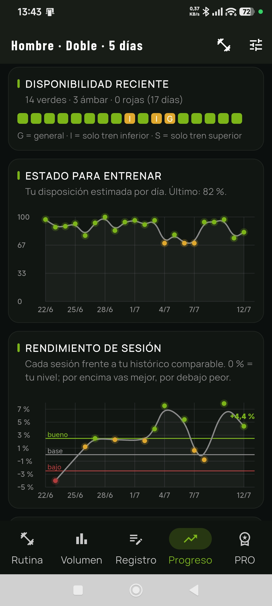
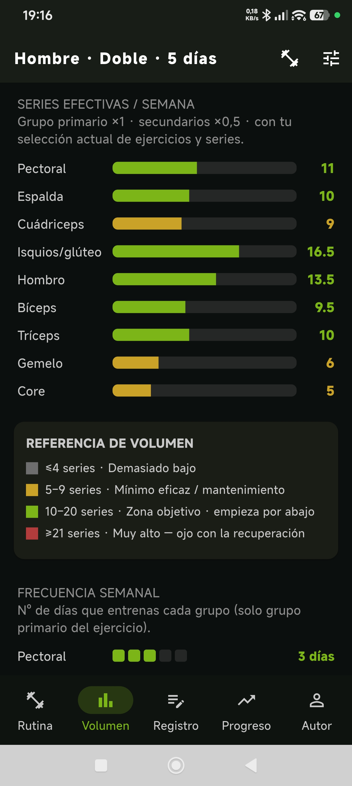
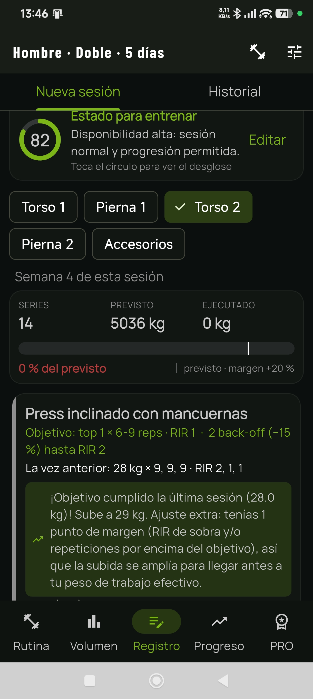

Si cumples, progresas
Cuando completas el objetivo con margen suficiente, la app calcula una subida adecuada.
App de entrenamiento de fuerza adaptativo
Las demás apps registran lo que haces. TrueLift planifica lo que haces después: analiza tu rendimiento y tu recuperación y decide cuándo subir peso, cuánto subir, cuándo mantener y cuándo descargar. Y te explica el porqué de cada decisión.
Rutina, registro, progresión automática y herramientas esenciales. Sin trucos.
Cero publicidad, cero cuentas. Todos tus datos viven en tu dispositivo.
Personalización total, autorregulación, VFC, fase de dieta, deload inteligente y rutinas descargables. Mensual, anual o pago único.
Prueba todo PRO gratis. Si no lo compras, sigues con la versión gratuita.
No es un registro. Es un entrenador.
Un cuaderno de gimnasio, aunque sea digital, solo acumula datos y te deja a ti la decisión difícil: ¿subo peso hoy o no? TrueLift evalúa tus datos como lo haría un entrenador: analiza cada sesión, compara tu rendimiento con tu propio histórico y programa la carga de la próxima. Menos incertidumbre y mejores decisiones de carga, en menos tiempo. Y esto no es una función de pago: la progresión automática está incluida en la versión gratuita.
Ni banners, ni vídeos, ni rastreadores. Nada interrumpe tu entrenamiento.
Instala y entrena. No pedimos tu email, ni tu nombre, ni nada de ti.
Todo tu historial vive en tu dispositivo. Tú decides con las copias de seguridad.
Planificación adaptativa · el corazón de TrueLift
Cada vez que abres una sesión, TrueLift ya ha hecho el trabajo de un entrenador: ha cruzado tu ejecución real, tu rendimiento reciente y tu recuperación para decidir qué te toca hoy. Ninguna app de registro hace esto por ti.
Gratis Progresión automática incluida
TrueLift no sube kilos por calendario ni por intuición. Analiza si has cumplido las repeticiones objetivo, el RIR previsto y tu rendimiento reciente. Si toca progresar, calcula un salto proporcionado al ejercicio y factible con tu material. Si no toca, mantiene la carga para que consolides antes de volver a subir.

Algoritmo base incluido
En la versión gratuita, TrueLift ya decide cuándo subir, mantener o consolidar. En PRO, añade una segunda capa de control con recuperación, molestias, VFC, fase de dieta y rendimiento reciente.
Cuando completas el objetivo con margen suficiente, la app calcula una subida adecuada.
Si faltan repeticiones o el RIR no acompaña, mantiene la carga para no forzar una progresión innecesariamente agresiva.
Con autorregulación activa en PRO, TrueLift puede bloquear subidas, bajar intensidad o anticipar una descarga para gestionar mejor la fatiga.
Todas las versiones · algoritmo sin caja negra
TrueLift no genera tu entrenamiento con un modelo opaco y variable. Usa un algoritmo de progresión ajustado, testeado y validado por usuarios experimentados y entrenadores: mismas entradas, misma lógica, misma decisión.
La lógica de progresión no cambia de criterio entre sesiones.
Cada decisión se basa en señales medibles: rendimiento y RIR; en PRO, también recuperación y fase de dieta.
Con los mismos datos, TrueLift aplica la misma lógica. Sin improvisación.
Gratis Versión gratuita incluida
La versión gratuita no es una demo vacía: incluye rutina base, registro, progresión automática, análisis de volumen, progreso, herramientas y copias de seguridad.
Parte de una rutina estructurada según seas hombre o mujer y los días que entrenas (de 2 a 5). Elige el sistema de progresión en función de tu nivel y sustituye cada ejercicio según el material disponible, tus preferencias o tus necesidades.
Elige la carga de tu primera serie y TrueLift ajusta las siguientes referencias de trabajo. Después compara la sesión actual con tu rendimiento anterior y programa la carga de la próxima sesión.
Visualiza series efectivas por grupo muscular y frecuencia semanal con una interfaz clara para detectar si te quedas corto o te estás pasando.
En la pestaña Progreso podrás consultar tonelaje de sesión, e1RM estimado, rendimiento, marcas personales e informe mensual listo para guardar o compartir.
Calculadora de discos, series de calentamiento, cronómetro de descanso, registro de cardio y opción de compartir tus entrenamientos y marcas de forma sencilla.
Tu rutina y tu historial viven en tu móvil. Puedes exportar y restaurar copias de seguridad para no perder tu progreso si cambias de dispositivo.


Gratis Versión gratuita incluida
TrueLift abre el registro con la sesión que toca, el objetivo de series, repeticiones y RIR, lo que hiciste la vez anterior y la carga indicada para cada ejercicio. Llegas al gimnasio, abres la app y te centras en lo importante: tu entrenamiento.
Abre la pestaña Registro y empieza por la sesión que toca.
Confirma carga y RIR, e introduce reps serie a serie mientras entrenas.
Guarda la sesión y recibe feedback sobre el entrenamiento de hoy.
PRO Personalización y autorregulación
Hasta aquí, la versión gratuita. PRO desbloquea la personalización completa de tu rutina y añade una segunda capa de control: estado diario, sueño, estrés, molestias, VFC, fase de dieta, rendimiento reciente, descarga guiada y descarga automática.
No solo registra tu entrenamiento: ajusta la progresión a cómo estás rindiendo y recuperando.
Elige tu distribución, patrones de movimiento y ejercicios; ajusta series, RIR, repeticiones y descansos.
La app tiene en cuenta tu descanso nocturno, estrés, molestias, energía, VFC y rendimiento reciente para decidir el próximo paso.
Biblioteca de rutinas listas para importar: express para días con poco tiempo, especialización en tren superior o inferior, solo peso libre para material limitado… y más en camino.
Modula la respuesta de la progresión en función de tu nutrición: déficit, mantenimiento o superávit.
Activa una descarga guiada cuando lo necesites o deja que TrueLift la proponga al detectar fatiga acumulada o bajón de rendimiento.
Crea tus propios ejercicios e importa tu rutina desde Excel para empezar donde lo dejaste.
Gratis vs PRO · precios
La versión gratuita ya permite entrenar en serio. PRO está pensado para quien quiere personalizarlo todo y ajustar la progresión a su recuperación real. Tú eliges cómo pagarlo: mensual, anual o una sola vez para siempre.
Entrena en serio desde el primer día.
Todo lo de Gratis, más:
| Función | Gratis | PRO |
|---|---|---|
| Rutina prefijada y progresión automática | ||
| Registrar sesiones y cardio | ||
| Calculadora de discos y calentamiento | ||
| Cronómetro de descanso con alarma | ||
| Volumen y frecuencia semanal | ||
| Progreso, marcas personales y rendimiento | ||
| Compartir entrenamiento e informe mensual | ||
| Copias de seguridad | ||
| Cambiar un ejercicio por otro | ||
| Descarga guiada manual (deload) | ||
| Configurar series, RIR, reps y descanso | ||
| Cambiar el patrón de un ejercicio | ||
| Renombrar las sesiones de la rutina | ||
| Crear ejercicios e importar rutina desde Excel | ||
| Rutinas descargables: express, especialización, peso libre… | ||
| Autorregulación por sueño, estrés, molestias y VFC | ||
| Progresión ajustada a déficit, mantenimiento o superávit | ||
| Descarga automática por fatiga o caída de rendimiento |
En la versión gratuita la fase de la dieta queda fijada en normocalórica y la autorregulación, la VFC y la descarga guiada están desactivadas. Todo lo demás funciona con normalidad.
Capturas de pantalla · gratis y PRO
Pantallas de la app: volumen, registro, progreso, historial y funciones PRO.
Preguntas frecuentes
Incluye rutina prefijada, sustitución de ejercicios, registro de sesiones y cardio, progresión automática, visualización de volumen, progreso y marcas, compartir entrenamientos y copias de seguridad.
La versión PRO es para ti si quieres personalizar completamente tu rutina, usar autorregulación para ajustar la progresión y acceder a herramientas específicas como creación de ejercicios, importación desde Excel, fase de dieta, descarga guiada, descarga automática y la biblioteca de rutinas descargables: express, especialización en tren superior o inferior, solo peso libre y más.
No y no. TrueLift no muestra ningún tipo de publicidad y no requiere registro: no pedimos tu email ni ningún dato personal. Todos tus datos de entrenamiento se guardan únicamente en tu dispositivo.
Como prefieras: suscripción mensual, suscripción anual o un pago único que desbloquea PRO para siempre. Las suscripciones no tienen permanencia y puedes cancelarlas cuando quieras. La compra queda asociada a tu cuenta de Google y puedes restaurarla si cambias de móvil o reinstalas la app.
Nada malo: la prueba no genera cargos automáticos. Si no eliges ningún plan, sigues usando la versión gratuita con tu rutina y tu historial intactos.
Puedes descargar el manual de TrueLift en PDF con la explicación de todas las pantallas y funciones, tanto gratuitas como PRO.
RIR significa repeticiones en reserva. Un RIR 2 indica que podrías haber hecho dos repeticiones más antes de fallar. Es una señal clave porque no solo mide lo ejecutado, sino también el margen real que te quedaba.
No. Es una variable más. Si no tienes VFC, la autorregulación funcionará en base a tu estado de recuperación, tus molestias y tu rendimiento reciente.
Una app de registro guarda lo que haces. TrueLift usa ese registro para calcular tu progresión. En PRO, además, puede modular la intensidad, ajustar la carga y sugerir descargas según tu estado.
Las rutinas de la versión gratuita tienen un enfoque más orientado a hipertrofia que a fuerza pura. En PRO puedes configurar tu rutina para priorizar adaptaciones de fuerza si ese es tu objetivo.
Sí. TrueLift calcula pesos cargables según tus discos, microcargas, mancuernas y material disponible.

Una app hecha por y para gente que entrena de verdad: todo lo necesario para progresar con criterio, sin publicidad, sin registro y sin funciones de relleno que te distraigan de tu objetivo.